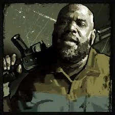

Coach
Coach es un hombre con un corazón tan grande como su apetito. Antes de que el mundo se fuera al garete, era un profesor de educación física en una escuela secundaria local en Savannah y un talentoso jugador de fútbol americano universitario hasta que una lesión de rodilla truncó su carrera profesional.
Como el superviviente de mayor edad del grupo, Coach asume un rol de liderazgo natural, tratando de mantener la moral alta incluso cuando las cosas se ponen feas. Aunque ha visto los horrores de la infección de cerca, su fe y su optimismo son su mayor arma (después de su motosierra, por supuesto).
A pesar de su imponente físico, es una persona amable que siempre tiene una palabra de aliento o una historia sobre comida para distraer al grupo del estrés del apocalipsis.
← Volver a Personajes